왜 이 포럼인가 Why
우리가 관리해야 할 데이터의 범위는 어디부터이며, 어디까지일까요. 시험실의 크로마토그램에서 시작된 질문은 이제 제조 설비의 센서 값과 밸리데이션 기록을 지나, AI 모델이 학습하는 방대한 데이터로 이어지고 있습니다.
그 답을 찾는 출발점은 변하지 않습니다 — 환자의 안전, 제품의 품질, 그리고 데이터 완전성. 그리고 그 너머에 ESG가 있습니다. ESG는 신뢰할 수 있는 데이터가 되었을 때 비로소 성립합니다.— 김정민 대표, 포럼 초청 메일 중
그 답을 찾는 출발점은 변하지 않습니다 — 환자의 안전, 제품의 품질, 그리고 데이터 완전성. 그리고 그 너머에 ESG가 있습니다. ESG는 신뢰할 수 있는 데이터가 되었을 때 비로소 성립합니다.— 김정민 대표, 포럼 초청 메일 중
세 개의 모듈 Foundation · Solution · Expansion
MODULE 1 · FOUNDATION
DI by Design과 확장되는 데이터 신뢰성10:15 – 12:05
MODULE 2 · SOLUTION
Data Integrity를 위한 솔루션13:00 – 13:20
MODULE 3 · EXPANSION
AI 적용의 현주소13:20 – 15:30
프로그램 Program
| 시간 | 프로그램 | 연사 |
|---|---|---|
| 10:00 – 10:15 | 접수 및 등록 · 네트워킹 | |
| MODULE 1 : Foundation — DI by Design과 확장되는 데이터 신뢰성 | ||
| 10:15 – 10:30 | 오프닝행사 소개 및 개회 | I&CP |
| 10:30 – 11:05 | 기조강연Data Integrity by Design의 핵심 — 그리고 규제 변화의 방향 | 김정민 대표 · I&CP |
| 11:05 – 11:35 | S1데이터 신뢰성, ESG로 확장되다 — 멀지 않은 미래의 요구 | 문승희 · 『기후기술의 시대』·『에너지 비즈니스』 저자, ESG 기반 신사업개발 전문가 |
| 11:35 – 11:50 | 브리핑 ①밸리데이션 기록의 Data Integrity — Digital Validation Tools의 적용 가능성 (현장 부스 E32 연계) | 이태원 대표 · DVT 전문가 |
| 11:50 – 12:05 | 브리핑 ②제약 규제 산업에서의 AI 활용 및 검증 사례 (현장 부스 F31 연계) | 박대희 (AI 개발자) · 최명인 (AX QA) |
| 12:05 – 13:00 | Lunch Time | |
| MODULE 2 : Solution — Data Integrity를 위한 솔루션 | ||
| 13:00 – 13:20 | S2Digitalization의 길목에서: 현장 인프라가 완성하는 Data Integrity | 이다음 부장 · DX 전문가 |
| MODULE 3 : Expansion — AI 적용의 현주소 | ||
| 13:20 – 14:00 | S3AI 시대의 의약품 제조 Data Integrity — 연합학습과 제조 파운데이션 모델의 가능성 | 김화종 단장 · K-MELLODDY |
| 14:00 – 14:40 | S4제약특화 AI와 스마트 DI 포털로 완성하는 데이터 거버넌스 | 황주영 이사 · 종근당 |
| 14:40 – 15:20 | S5AI 확장의 조건 — 데이터·모델 거버넌스 종합 + 패널 Q&A | 발표자 전원 |
| 15:20 – 15:30 | Closing — Q&A 및 폐회 | |
대상: IT 인프라 · 어플리케이션 · QA · DI 전담부서 담당자 (제약 · 바이오 · 의료산업) · 사전등록 무료
현장 스케치 Photos
사진을 누르면 크게 볼 수 있습니다
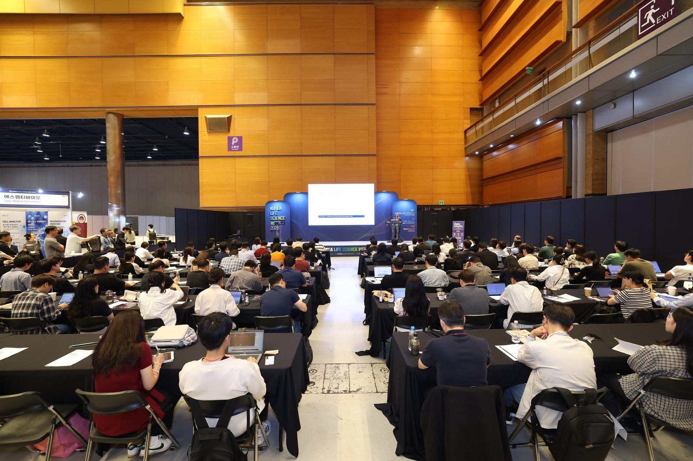

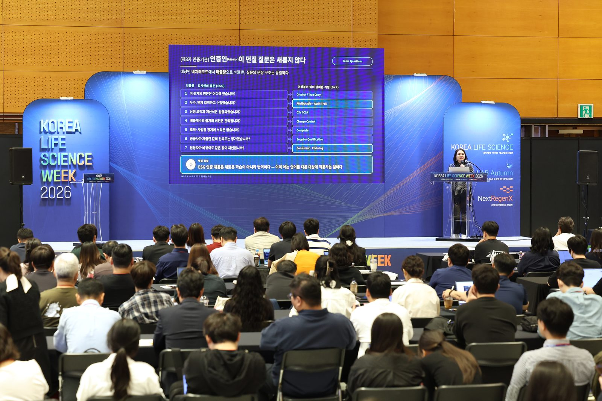

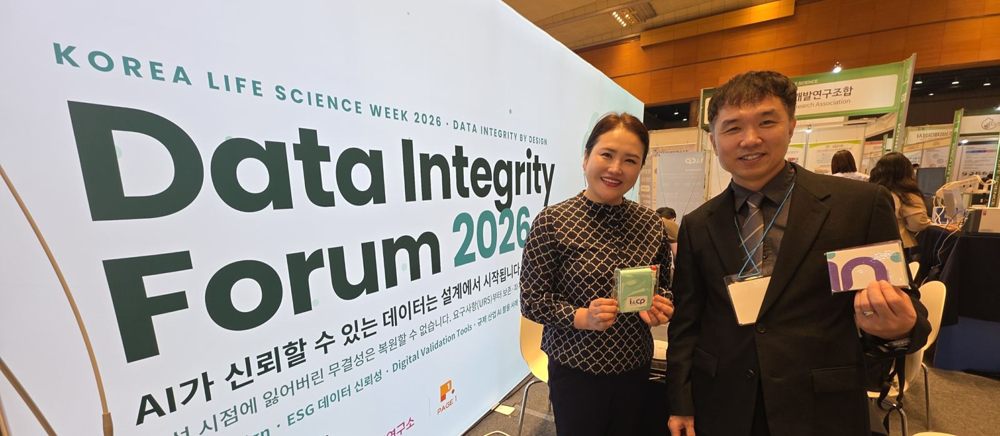

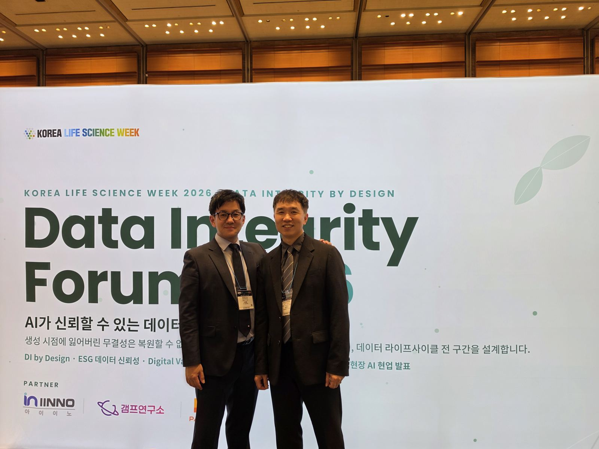

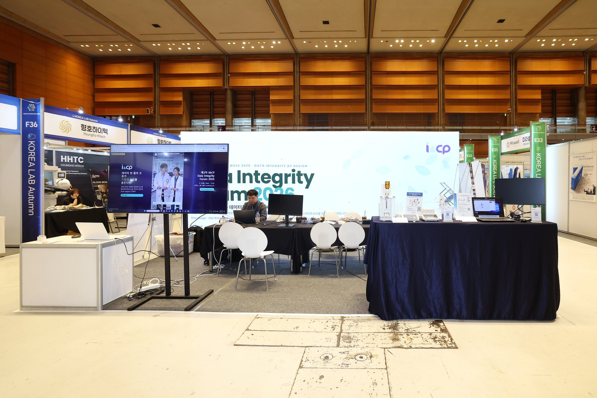

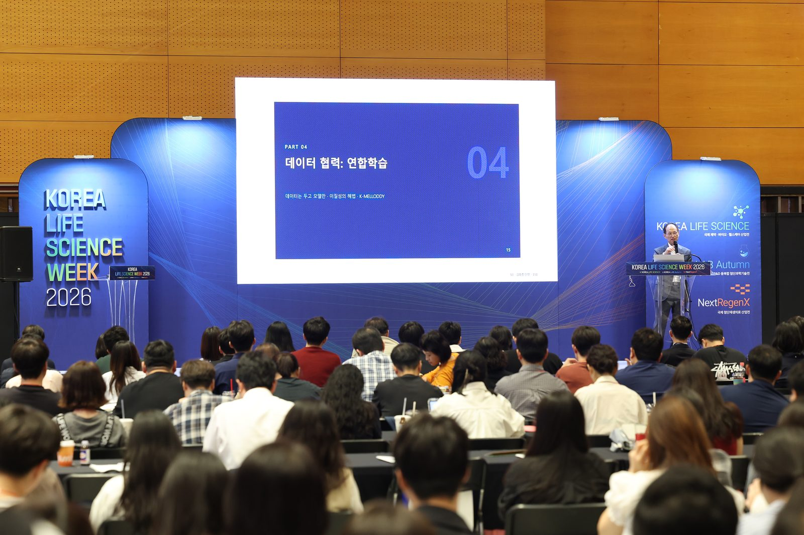

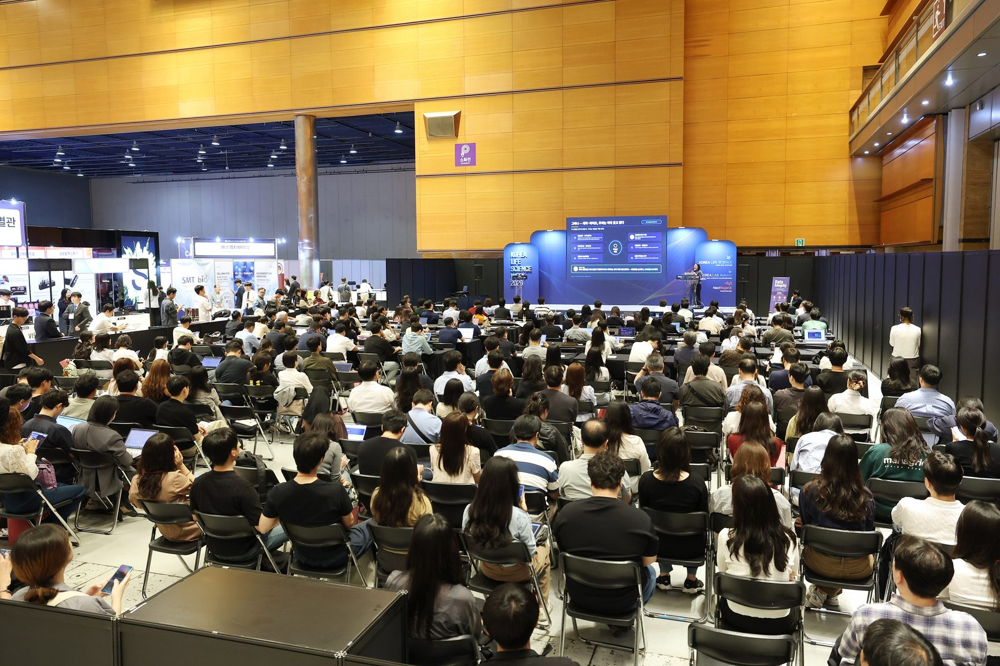

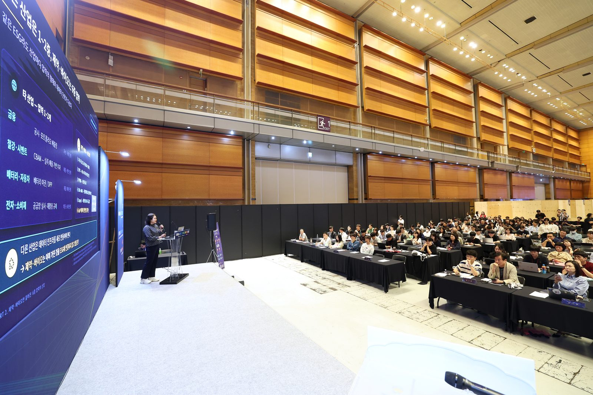

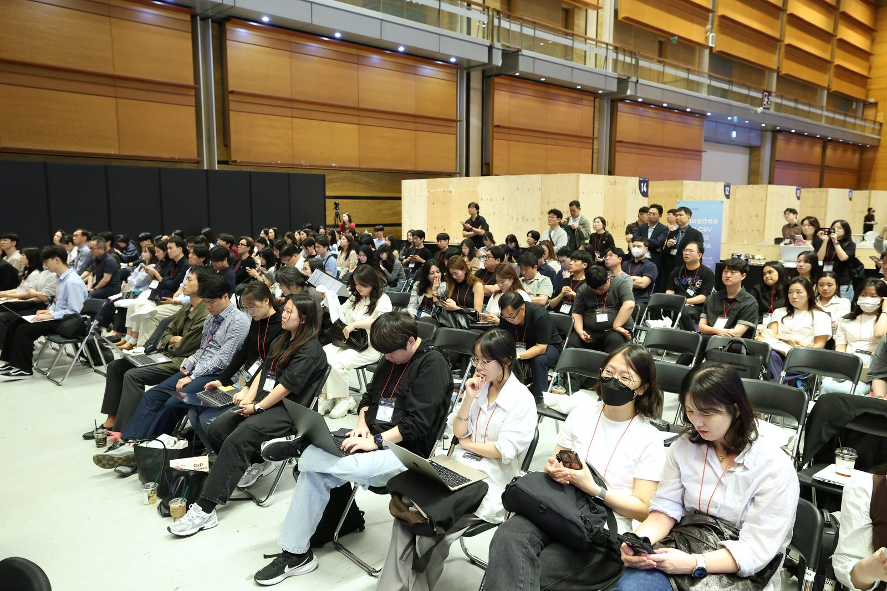

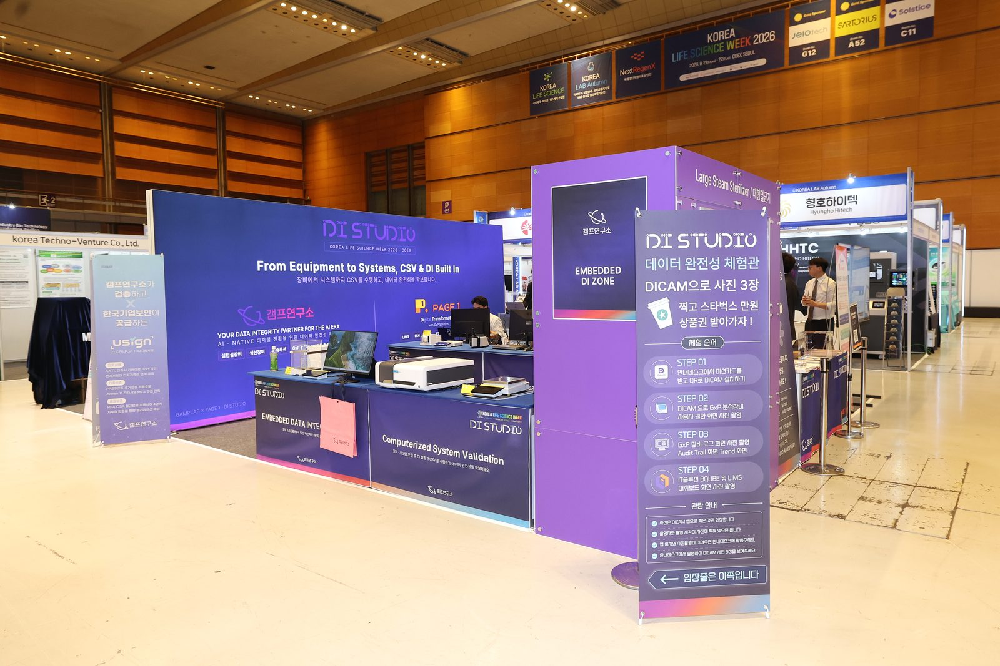

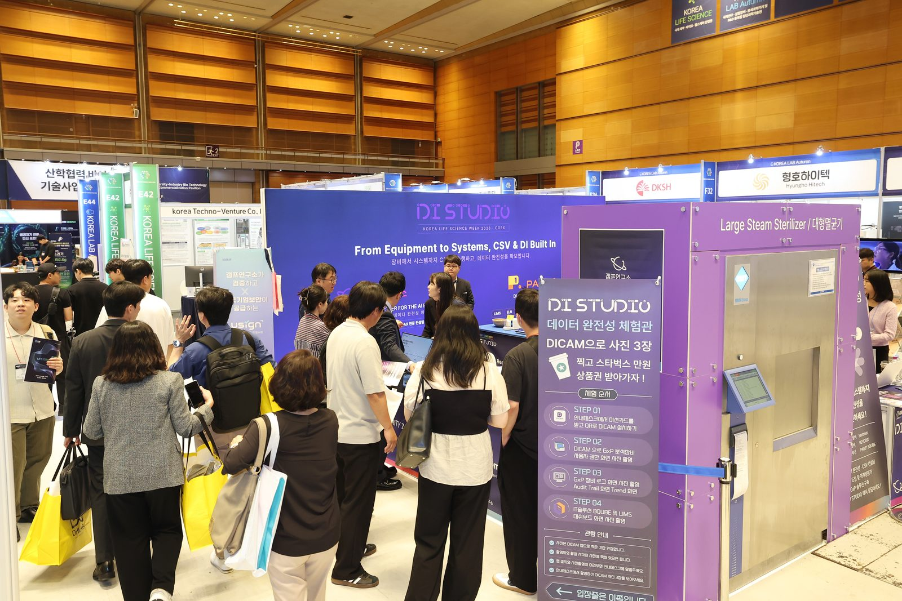

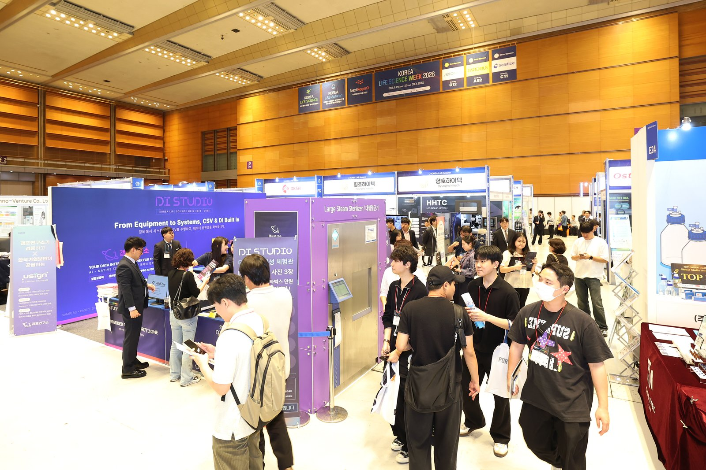
공개 자료 Materials
자료실 전체 →WEB기조강연 · Data Integrity by Design의 핵심김정민 대표 (I&CP) · 교재용 슬라이드→WEBS5 · AI 확장의 조건 — 데이터·모델 거버넌스패널 세션 자료 · 교재용 슬라이드→WEBData Integrity Forum 2026 소개자료행사 소개 · 모듈 구성→
공개 자료는 웹에서 슬라이드로만 볼 수 있습니다. 참석자용 교재에 실린 다른 연사의 발표자료는 각 연사에게 저작권이 있어 공개하지 않습니다. 연사 동의를 받는 대로 이곳에 순서대로 공개합니다.
관련 뉴스레터 Newsletter
다른 회차 보기
전체 아카이브 →해석이 어려웠던 규정·가이드라인을 알려 주세요
규정이나 가이드라인을 읽다가 해석이 분명하지 않았던 부분이 있다면 incp@diforum.org로 보내 주세요. 10명 이상이 요청해 주신 주제는 특별판 뉴스레터로 다루겠습니다.